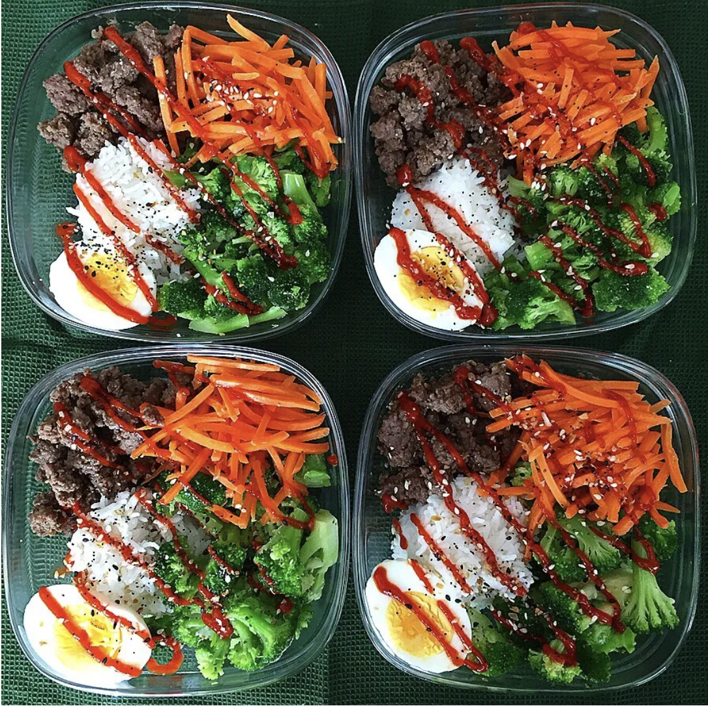

Bulgogi Bowl

Description
Nutrition
385 calories (32.3P/7.2F/43.6C)
Ingredients
- 1lb 94/6 ground beef
- 4.5tbsp Korean Bulgogi Sauce and Marinade
- 2 cups Cooked rice (400g) (so 1 cup dry rice will make enough)
- 2 eggs
- 4oz matchstick carrots
- 4 servings frozen broccoli
- sriracha
Steps
-
If you have foresight, marinate your ground beef overnight. Put your bulgogi beef sauce in with your raw ground beef, mix it up, and then stack it in the fridge until you’re ready to cook.
-
Cook your rice. 1 cup of dry rice will make just over the amount we need
-
Hard-boil your eggs
-
Cook your marinated ground beef in a pan
-
Assembly time! I measures out my rice first (about 1/2 cup per container) then separated my beef into 4 equal servings
-
PUT IN YOUT FROZEN BROCCOLI, YES FROZEN, They are just as healthy, if not healthier since they are frozen at peak freshness and since this is a meal prep, they will cook when you heat everything up in the microwave.
-
Put your match stick carrots in, Came concept as the broccoli, no need to cook.
-
Peel your eggs (my least favorite part TBH) and put one half in each bowl
-
Drizzle with sriracha and VOILA!!